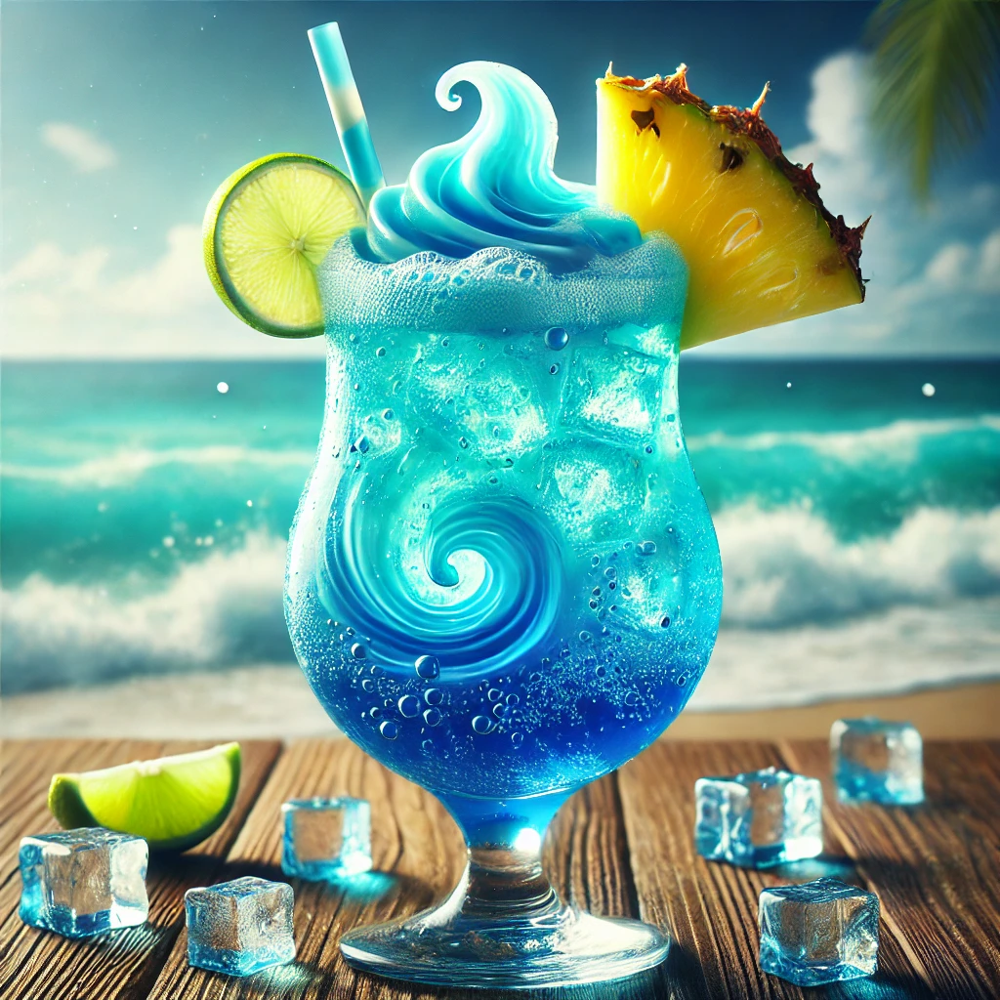

THE BUSTY MERMAID

Tidal Wave
Ingredienser og Oppskrift:
Ta et dypdykk og la deg rive med av bølgene – her kommer **Tidal Wave**, drinken som gir deg den samme kraften og spenningen som en gigantisk bølge som ruller inn mot stranden. Denne drinken er intens, men samtidig forfriskende, og er laget for de som ikke er redd for å utforske havets dypeste hemmeligheter.
Hva finner vi i denne stormfulle drinken? Her er oppskriften på å fange bølgene i et glass:
- 1 del **blå curacao** (for å fange havets dype blå farger)
- 1 del **vodka** (for å gi bølgen den rette styrken)
- 1 del **limejuice** (en frisk og sur påminnelse om sjøluften)
- 1 del **ananasjuice** (som en tropisk bris som slår inn fra stranden)
- Et dash **sprite eller club soda** (for å få bølgen til å rulle!)
Hvordan lage denne drinken:
- Fyll en shaker med is og tøm alle ingrediensene oppi.
- Rist hardt og la bølgen rulle – du vil kjenne spenningen bygge seg opp.
- Sil drinken i et høyt glass fylt med is og topp med sprite eller club soda for å gi den en skummende effekt.
- Skål og vær klar for å ri på bølgene til den siste slurken!
OBS: Denne drinken har en tendens til å sette gang i dansen på bordene – vær forberedt på å kaste deg ut i bølgene av moro!